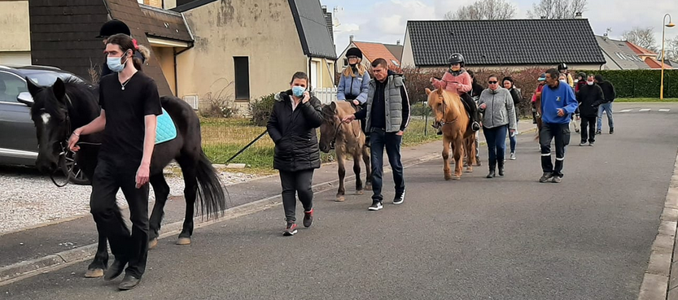

Découverte
Découverte écoles
L'activité de découverte est particulièrement adaptée aux classes de maternelles et dure environ deux heures.
Il s'agit de faire découvrir aux enfants le poney-club, ses animaux et ses activités.
La visite commence par l'accueil et la présentation de la journée.
Notre monitrice présente les règles de sécurité à appliquer dans un Poney-Club avant d’emmener les enfants à la découverte des lieux et de ses habitants : chevaux et poneys mais aussi poules, coqs, canards, oies, lapins, chats etc...
Après quelques explications, les enfants pourront ensuite participer à l'atelier d'initiation à la voltige, panser (brosser) leur poney et finir par une promenade de quelques minutes dans la carrière.
Durant tout le parcours, les élèves apprennent le vocabulaire qui leur sera utile et sont amenés à réfléchir sur le développement durable : écolitières, récupération des eaux de pluie, énergie animale etc...
Petite info pratique : les classes peuvent arriver au club en prenant le bus de ville gratuit.
Nos activités sont élaborées pour des groupes de 24 élèves environ soit une classe.
La présence simultanée au club de deux classes est possible mais pas souhaitable : dans ce cas, le club met à disposition deux animateurs mais les activités sont moins facilement accessibles aux élèves.
